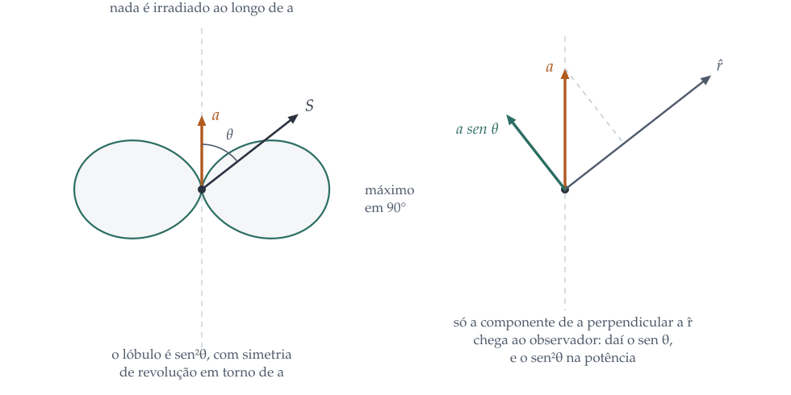

Radiação de dipolo elétrico e magnético, a potência irradiada por uma carga acelerada e a reação de radiação.
1. O que escapa para o infinito
Uma carga parada tem campo, e esse campo guarda energia. Uma carga em
movimento uniforme tem campo, e esse campo carrega energia junto com ela. Em
nenhum dos dois casos alguma energia se perde: desligue o movimento e tudo
volta. Radiação é outra coisa, e vale a pena ser preciso sobre qual.
Tome uma esfera de raio \(r\) em volta da fonte e pergunte quanta energia
atravessa a sua superfície. O fluxo é a integral do vetor de Poynting, e a
área cresce com \(r^2\). Para que o resultado não desapareça quando a esfera
cresce, é preciso que
permaneça finito, e isso exige \(E \sim 1/r\). Essa é a definição
operacional: radiação é a parte do campo que cai com \(1/r\).
Todo o resto, por mais intenso que seja perto da fonte, se dilui depressa
demais para chegar ao infinito.
O capítulo 10 já mostrou onde essa parte mora. Nos campos de uma carga
pontual em movimento qualquer, a parcela que vai com \(1/\imath^2\) depende
apenas da velocidade e acompanha a carga; a parcela que vai com \(1/\imath\)
é proporcional à aceleração. A conclusão é curta e tem uma
consequência enorme:
O critério
Carga parada não irradia. Carga em movimento uniforme não irradia. Carga
acelerada irradia, e a energia que ela perde não volta nunca
mais.
Resta calcular quanto. Há dois caminhos. Um parte dos potenciais de
Liénard-Wiechert, que o capítulo 10 construiu, e exige derivar expressões
desconfortáveis. O outro, mais curto e mais físico, é o que J. J. Thomson usou
em 1903, e é o que seguimos aqui.
2. O método de Thomson
A ideia é começar pelo potencial vetor e descobrir que, para calcular
radiação, quase tudo o que torna o problema difícil é desnecessário.
O ponto de partida
No calibre de Lorenz, os potenciais satisfazem equações de onda com fonte,
cuja solução retardada o capítulo 10 obteve:
Vamos impor duas condições, e são elas que fazem o problema desmoronar em
poucas linhas.
Primeira: o observador está longe, muito mais longe que o
tamanho da fonte. Então \(\left|\vet{r}-\vet{r}'\right| \approx r\) no
denominador.
Segunda: a fonte é pequena comparada ao comprimento de onda
da radiação que emite. Então o atraso dentro da fonte é desprezível, e
todos os pedaços dela contribuem com o mesmo tempo retardado,
\(t_r \approx t - r/c\). É a aproximação de dipolo, e é exatamente aquilo que
uma partícula não relativística satisfaz: ela anda muito menos que \(\lambda\)
em um período, justamente porque \(v \ll c\).
isto é, a derivada do momento de dipolo elétrico. Para uma única
carga pontual, \(\vet{p} = q\vet{w}(t)\) e a integral vale simplesmente
\(q\vet{v}\). O dipolo magnético e os multipolos de ordem mais alta aparecem só
no termo seguinte da expansão, aquele que guardamos no "aproximadamente", e
são menores por um fator \(v/c\). Logo
Falta tirar \(\vet{E}\) e \(\vet{B}\), e aqui entra de novo o critério da
seção anterior: só interessa o que cai com \(1/r\). Derivar \(1/r\) em relação
a \(r\) produz \(1/r^2\), que não interessa; derivar o argumento retardado
\(t_r = t-r/c\) produz um fator \(-1/c\) e mantém o \(1/r\), que interessa. A
regra prática é curta: para radiação, derivar no espaço equivale a
derivar no tempo e multiplicar por \(-\vers{r}/c\).
Com ela, a parte de radiação do campo elétrico vem direto de
\(\vet{E} = -\nabla V - \partial\vet{A}/\partial t\). O gradiente do potencial
escalar contribui apenas com a parcela longitudinal, que cancela a componente
de \(\partial\vet{A}/\partial t\) ao longo de \(\vers{r}\), e o que sobra é a
parte transversal:
O campo de radiação é transversal, é proporcional à
aceleração, e é retardado: o que se mede aqui e agora é o
que a carga fez há \(r/c\) segundos. A última é a mais fácil de esquecer e a
mais importante: a informação de que a carga foi acelerada viaja, e a energia
viaja com ela.
3. Larmor, e o padrão sen²θ
Com os campos em mãos, a potência sai de uma conta de duas linhas. O vetor
de Poynting de uma onda transversal vale
e, escrevendo \(a_\perp = a\sen\theta\), com \(\theta\) medido a partir da
direção da aceleração,
\[ S = \frac{1}{\mu_0c}\left(\frac{\mu_0qa\sen\theta}{4\pi r}\right)^2
= \frac{\mu_0q^2a^2}{16\pi^2c}\frac{\sen^2\theta}{r^2}. \]

À esquerda, a superfície \(\sen^2\theta\): duas folhas simétricas
em torno do eixo da aceleração, com um nó exato na direção de \(\vet{a}\) e
máximo no plano perpendicular. À direita, a razão disso: o observador só
"vê" a componente da aceleração perpendicular à sua linha de visada, e essa
projeção vale \(a\sen\theta\). Na potência, que vai com o quadrado do campo,
o seno vira \(\sen^2\theta\).
Repare que o \(r^2\) do denominador vai cancelar exatamente o \(r^2\) do
elemento de área: a potência que atravessa a esfera não depende do raio, como
tem de ser para algo que vai embora de verdade. Integrando,
que é a fórmula de Larmor. Em termos do dipolo, com
\(\ddot{\vet{p}} = q\vet{a}\) e uma oscilação harmônica
\(p(t) = p_0\cos\omega t\), a média temporal fica
A quarta potência da frequência é o detalhe mais consequente de todo o
capítulo, e a seção 6 mostra por quê.
Exemplo trabalhado: a resistência de radiação de uma antena
curta. Uma antena de \(d = 30\ \mathrm{cm}\) opera em
\(100\ \mathrm{MHz}\), com corrente de amplitude \(I_0 = 1{,}0\ \mathrm{A}\).
Quanta potência ela irradia, e que resistência isso representa?
O comprimento de onda é \(\lambda = c/f = 3{,}0\
\mathrm{m}\), de modo que \(d/\lambda = 0{,}10\): a antena é curta o bastante
para a aproximação de dipolo valer razoavelmente.
O momento de dipolo. Se a corrente tem amplitude \(I_0\), a
carga que oscila nas pontas tem amplitude \(q_0 = I_0/\omega\), e
Honestidade sobre o modelo. Essa conta supõe a mesma
corrente em todo o comprimento da antena, o que é impossível: nas pontas a
corrente tem de ser nula, porque não há para onde a carga ir. Numa antena real
curta, o perfil é aproximadamente triangular, a corrente média cai pela
metade, e a potência, que vai com o quadrado, cai a um quarto:
\(R \approx 1{,}98\ \Omega\) e \(\left\langle P\right\rangle \approx
0{,}99\ \mathrm{W}\).
Ou seja: uma antena curta é um radiador ruim, e piora com o quadrado do
encurtamento. Casá-la a uma linha de 50 Ω exige uma rede de adaptação, e
qualquer perda ôhmica no condutor compete diretamente com esses poucos ohms de
resistência de radiação. É por isso que a antena de meia onda, com os seus
73 Ω, é o padrão: ela irradia bem e casa quase sozinha.
4. A hierarquia: dipolo magnético e o resto
O termo que descartamos na expansão não é zero, apenas menor. Vale a pena
saber o quanto, e o que aparece lá.
Mantendo a ordem seguinte no atraso interno da fonte,
e a integral do segundo termo se separa em duas partes, uma antissimétrica e
outra simétrica na troca dos índices. A antissimétrica dá o dipolo
magnético, \(\vet{m}\); a simétrica dá o quadrupolo
elétrico. Para uma espira de corrente oscilante,
que tem a mesma cara da fórmula do dipolo elétrico, com \(p_0\) trocado por
\(m_0/c\). Essa é a chave da comparação.
Por que a radiação magnética é tão mais fraca
Para uma espira de raio \(R\) com corrente \(I_0\), \(m_0 = I_0\pi R^2\);
para um dipolo elétrico do mesmo tamanho, \(p_0 = q_0R \sim I_0R/\omega\). A
razão das potências é
Como a aproximação de dipolo já exigiu \(R \ll \lambda\), a radiação de
dipolo magnético é automaticamente pequena. A hierarquia continua: cada ordem
seguinte perde mais um fator \(R/\lambda\). Por isso quase toda antena prática
é um radiador de dipolo elétrico, e por isso as transições atômicas de dipolo
elétrico são milhões de vezes mais rápidas que as de dipolo magnético, que os
espectroscopistas chamam de proibidas.
Há uma exceção importante. Quando o dipolo elétrico é nulo por simetria, a
ordem seguinte deixa de ser uma correção e passa a ser o efeito inteiro. É o
que acontece numa espira fechada com corrente alternada, numa transição atômica
entre estados de mesma paridade, e na radiação gravitacional, em que o
equivalente do dipolo é nulo por conservação do momento e a primeira ordem
observável é o quadrupolo.
5. Cargas rápidas: Liénard e o síncrotron
A fórmula de Larmor supõe \(v \ll c\), e as máquinas mais interessantes do
mundo violam essa hipótese por muitas ordens de grandeza. A generalização
relativística é a fórmula de Liénard:
Dois casos extremos organizam tudo o que vem depois.
Aceleração paralela à velocidade, como num acelerador
linear: o colchete vira \(a^2\) e sobra \(\gamma^6\).
Aceleração perpendicular à velocidade, como num anel: o
colchete vira \(a^2(1-v^2/c^2) = a^2/\gamma^2\) e sobra \(\gamma^4\).
Parece que o caso linear é pior, mas é o contrário, e a razão é que as duas
situações não são comparáveis diretamente. Num acelerador linear a aceleração
que importa é a que um campo elétrico consegue dar, e ela é limitada; num anel,
a aceleração centrípeta \(v^2/\rho\) é imposta pela geometria e não tem como
ser reduzida sem aumentar o anel. O resultado prático é que a radiação é o
limite dos anéis, não dos lineares.
Exemplo trabalhado: o LEP, o LHC e o mesmo túnel. Entre 1989
e 2000, o anel de 27 km do CERN acelerou elétrons e pósitrons. Desde 2008, o
mesmo túnel abriga prótons. A diferença entre as duas máquinas é, em boa
medida, esta seção.
A perda por volta. Com \(\vet{a}\perp\vet{v}\),
\(a = v^2/\rho\) e \(\gamma = E/mc^2\), a energia perdida numa volta é
\[ \Delta E = \frac{q^2\gamma^4\beta^3}{3\varepsilon_0\rho}, \]
que para elétrons se escreve, em unidades práticas,
Os números, com \(\rho = 3096\ \mathrm{m}\) no LEP:
máquina
partícula
energia
perda por volta
LEP-1
elétron
45,6 GeV
124 MeV
LEP-2
elétron
104,5 GeV
3,4 GeV
LHC
próton
7000 GeV
6,7 keV
A leitura. No LEP-2, cada elétron precisava receber, a cada
volta, 3,4 GeV só para não desacelerar. Era preciso encher o anel de cavidades
supercondutoras de radiofrequência apenas para repor a radiação, e foi esse
custo, crescendo com \(E^4\), que encerrou a máquina: dobrar a energia exigiria
dezesseis vezes mais potência.
E o LHC? O próton é 1836 vezes mais pesado, e a perda vai
com \(1/m^4\), isto é, \(1{,}1\times10^{13}\) vezes menor na mesma energia.
Mesmo a 7 TeV, uma energia 67 vezes maior que a do LEP-2, a perda por volta é
de 6,7 keV, um milhão de vezes menor. Ela ainda importa, porque o feixe tem
\(3\times10^{14}\) prótons e os ímãs estão a 1,9 K: alguns quilowatts
depositados no hélio superfluido são um problema de criogenia, não de
energia.
E a volta por cima. O que matou o LEP sustenta uma
indústria inteira. Um anel pequeno de elétrons, projetado justamente para
irradiar, é uma fonte de luz síncrotron, e a radiação que o projetista de
colisores combate é exatamente o produto que o usuário quer: raios X
intensos, colimados e sintonizáveis. O Sirius, em Campinas, é uma dessas
máquinas.
6. Espalhamento: Thomson, Rayleigh e o céu
A radiação de dipolo tem uma aplicação que não é sobre antenas nem sobre
aceleradores: espalhamento. A ideia é simples de enunciar. Uma onda chega a uma
carga, a carga é acelerada pelo campo da onda, e a carga acelerada irradia. A
luz que sai em outras direções foi "espalhada", e nada além de Larmor é
necessário para calculá-la.
Carga livre: Thomson
Para um elétron livre, a aceleração é \(a = eE_0\cos\omega t/m\), e a
potência média sai de Larmor. Dividindo pela intensidade incidente,
\(I = \frac12c\varepsilon_0E_0^2\), obtém-se uma área, que é a seção de choque:
numericamente \(6{,}65\times10^{-29}\ \mathrm{m^2}\). O campo
\(E_0\) se cancela, e a frequência também: um elétron livre espalha
todas as cores igualmente. É por isso que o interior do Sol, onde os
elétrons estão livres, é opaco de modo acromático, e é por isso que \(\sigma_T\)
aparece em toda conta de astrofísica, do limite de Eddington ao desacoplamento
da radiação cósmica de fundo.
Carga ligada: Rayleigh
Num átomo ou numa molécula, o elétron não está livre: está preso por uma
força restauradora, com frequência natural \(\omega_0\) no ultravioleta. Para
luz visível, \(\omega \ll \omega_0\), e o oscilador forçado responde com
amplitude praticamente estática,
\[ x_0 \approx \frac{eE_0}{m\omega_0^2}, \]
de modo que a aceleração vale \(\omega^2x_0\) e a potência irradiada, que vai
com o quadrado da aceleração, cresce com \(\omega^4\):
Essa é a lei de Rayleigh, e ela explica a cor do céu de uma vez só. A luz
azul, de comprimento de onda menor, é espalhada muito mais que a vermelha; o
que chega aos olhos vindo de uma direção qualquer do céu é essa luz espalhada,
e é azul.
Exemplo trabalhado: o céu, o poente e um número. O script
espalhamento.py calcula a seção de choque de uma molécula de ar a
partir do índice de refração do ar, sem nenhum parâmetro ajustado, e multiplica
pela densidade de colunas da atmosfera (\(2{,}15\times10^{29}\) moléculas por
metro quadrado). O resultado é a profundidade óptica \(\tau\), e a transmissão
é \(e^{-\tau}\).
cor
σ por molécula
τ no zênite
transmissão ao meio-dia
no poente (38 atmosferas)
violeta, 400 nm
1,59×10⁻³⁰ m²
0,342
71 %
0,0002 %
azul, 450 nm
9,78×10⁻³¹ m²
0,210
81 %
0,03 %
verde, 550 nm
4,30×10⁻³¹ m²
0,093
91 %
3,0 %
vermelho, 650 nm
2,18×10⁻³¹ m²
0,047
95 %
17 %
Confira contra a medida. A profundidade óptica de Rayleigh
medida ao nível do mar vale cerca de 0,23 no azul e 0,05 no vermelho. A conta,
feita apenas com o índice de refração do ar, acerta as duas.
O poente. Com o Sol no horizonte, a luz atravessa cerca de
38 vezes mais atmosfera. O vermelho ainda chega com 17 % da intensidade; o azul
chega com 0,03 %, isto é, 500 vezes menos. O Sol poente não fica laranja porque
ganha vermelho, e sim porque perde todo o resto.
E por que não violeta? Se o espalhamento cresce com
\(1/\lambda^4\), o céu deveria ser violeta, que é espalhado ainda mais que o
azul. Duas razões: o espectro solar já tem menos violeta que azul, e os cones
do olho humano são bem menos sensíveis nessa faixa. O céu é azul por causa de
Rayleigh, mas é desse azul por causa da fisiologia.
Um teste de dois segundos
A luz espalhada a 90° do Sol é fortemente polarizada, porque o dipolo
induzido nas moléculas não irradia ao longo da sua própria direção. Olhe para
um trecho de céu a noventa graus do Sol através de um óculos polarizado e gire
a cabeça: o azul escurece e clareia. O padrão \(\sen^2\theta\) da figura da
seção 3 é visível a olho nu, de dentro de um carro.
7. A reação de radiação, e onde a teoria clássica termina
Falta uma pergunta incômoda, e ela fecha o curso. Se a carga acelerada perde
energia irradiando, alguma força tem de estar fazendo esse trabalho negativo
sobre ela. Que força é essa?
A resposta é que a carga sente o seu próprio campo. Cada pedaço da
distribuição de carga empurra os outros, e numa configuração acelerada esses
empurrões não se cancelam, porque chegam com atrasos diferentes. Impondo que o
trabalho dessa força, ao longo de um ciclo, seja igual à energia irradiada,
chega-se à fórmula de Abraham-Lorentz:
proporcional à derivada da aceleração. É um resultado
desconfortável por pelo menos três motivos, e vale enfrentá-los em vez de
escondê-los.
Primeiro: soluções fugitivas. Para uma partícula livre, a
equação \(m\dot{v} = \tau m\ddot{v}\), com
\(\tau = \mu_0q^2/6\pi mc\), admite \(a(t) = a_0e^{t/\tau}\). Uma partícula
sozinha no universo começaria a acelerar sem causa, exponencialmente, para
sempre.
Segundo: pré-aceleração. Descartando as soluções fugitivas
com a condição de contorno adequada, aparece outra patologia: a partícula
começa a acelerar antes de a força ser aplicada, com uma antecedência
da ordem de \(\tau\). Para o elétron, \(\tau = 6{,}3\times10^{-24}\) s, o tempo
que a luz leva para atravessar o raio clássico do elétron. É pouco, mas é
causalidade violada.
Terceiro: o caso de aceleração constante. Com \(\vet{a}\)
constante, \(\dot{\vet{a}} = 0\) e a força de reação é nula, embora a carga
esteja irradiando. De onde sai a energia? Essa é a situação, ainda discutida,
de uma carga em repouso num campo gravitacional uniforme.
Onde isso para
Os três problemas apontam para o mesmo lugar: o conceito de carga pontual.
A energia do campo de uma carga pontual diverge, a massa eletromagnética
diverge, e a reação de radiação herda a doença. A eletrodinâmica clássica é
uma teoria excelente que não sabe o que é um elétron, e as suas patologias
aparecem exatamente na escala \(r_e = 2{,}8\times10^{-15}\ \mathrm{m}\), em
que ela já deveria ter sido substituída pela eletrodinâmica quântica. Lá, a
divergência é tratada por renormalização, e o resultado, o momento magnético
do elétron, é a previsão mais bem verificada da física.
Vale terminar olhando para trás. O curso começou com uma carga parada e a
lei de Coulomb, passou por correntes, matéria polarizada e magnetizada,
indução, as quatro equações reunidas, as leis de conservação e as ondas, e
termina com uma carga acelerada que irradia e com uma teoria que não consegue
descrever consistentemente a sua própria fonte. Não é um fracasso: é a maneira
usual como uma teoria física indica, com precisão, onde ela termina e onde
começa a próxima.
Monta os potenciais retardados exatos de uma antena curta, obtém
\(\vet{E}\) e \(\vet{B}\) por diferenças finitas e integra o fluxo de
energia sobre esferas de vários raios.
Confira assim: a potência média tem de bater com
Larmor e ser a mesma em todo raio; o padrão angular tem de ser
\(\sen^2\theta\); e o expoente com que o campo cai tem de passar de
\(-3\) a \(-1\) ao cruzar um comprimento de onda.
Aplica a fórmula de Liénard ao movimento circular e calcula a energia
perdida por volta no LEP, no LHC e no Sirius.
Confira assim: a conta direta tem de reproduzir a regra
prática \(88{,}46\,E^4/\rho\); o expoente com a energia tem de dar 4,00; e
a razão próton/elétron tem de ser \((m_e/m_p)^4\).
Obtém a seção de choque de Thomson a partir de Larmor e a de Rayleigh a
partir do índice de refração do ar, e calcula a transmissão da atmosfera
cor por cor.
Confira assim: \(\sigma_T\) tem de dar
\(6{,}65\times10^{-29}\ \mathrm{m^2}\) para qualquer intensidade e
frequência; e a profundidade óptica calculada tem de bater com a medida,
0,21 no azul contra 0,05 no vermelho.
Do capítulo 10, e vale revisitar aqui: ele separa as parcelas de
velocidade e de aceleração do campo de uma carga em movimento qualquer.
Confira assim: a potência média que atravessa qualquer
esfera é a de Larmor, e some quando a aceleração é desligada.
9. Exercícios propostos
Os enunciados são nossos, e as soluções estão aqui mesmo, recolhidas. Resolva antes de abrir: ler solução pronta dá a sensação de ter entendido, que é diferente de ter entendido.
11.1 Um elétron ao sol
Um elétron livre está exposto à luz solar, de intensidade
\(1361\ \mathrm{W/m^2}\). Calcule a amplitude do campo elétrico, a
amplitude da aceleração do elétron e a potência que ele irradia. Depois
obtenha a seção de choque dividindo uma pela outra e compare com
\(\sigma_T = 8\pi r_e^2/3\).
exatamente \(\sigma_T\), como tem de ser: a seção de choque de Thomson
é essa razão.
Leitura. O elétron intercepta uma área de
\(6{,}65\times10^{-29}\ \mathrm{m^2}\), isto é, cerca de
\(10^{-9}\) vezes a seção de um átomo. Um gás de elétrons livres é
quase transparente, e só fica opaco quando a coluna é astronômica: é por
isso que \(\sigma_T\) governa a opacidade do interior das estrelas e o
momento em que o universo, ao esfriar e recombinar, ficou
transparente.
11.2 Quanto tempo dura o átomo clássico
Um elétron em órbita circular de raio \(r\) em torno de um próton
irradia pela fórmula de Larmor e, portanto, espirala para dentro. Monte a
equação para \(r(t)\), integre-a e calcule o tempo até o colapso partindo
do raio de Bohr. Quantas voltas ele dá nesse tempo?
As voltas. O período inicial é
\(T = 2\pi a_0/v = 1{,}52\times10^{-16}\) s, de modo que o elétron dá
cerca de \(1{,}0\times10^{5}\) voltas antes de cair. Parece muito, e são
16 picossegundos.
A moral. Se o eletromagnetismo clássico valesse dentro do átomo,
toda a matéria teria colapsado em dezenas de picossegundos, emitindo um
clarão de espectro contínuo. A matéria existir, e os espectros atômicos
serem discretos, são os dois fatos que forçaram a quantização. Repare que
o argumento não é vago: ele dá um número, e o número está errado por
todas as ordens de grandeza possíveis.
11.3 Por que a antena curta é um mau negócio
Uma antena de \(60\ \mathrm{cm}\) opera em \(10\ \mathrm{MHz}\), feita
de um bastão de cobre de \(2\ \mathrm{mm}\) de raio
(\(\sigma = 5{,}96\times10^{7}\ \mathrm{S/m}\)). Calcule a resistência de
radiação (com perfil de corrente triangular) e a resistência ôhmica em
alta frequência, e obtenha a eficiência. Comente.
Ver solução
A resistência de radiação. Com
\(\lambda = c/f = 30\ \mathrm{m}\), \(d/\lambda = 0{,}020\), e corrente
triangular,
Comentário. Dois terços da potência vira onda e um terço vira
calor, e isso com um bastão de cobre grosso. Encurte a antena pela metade
e \(R_{\text{rad}}\) cai por quatro, para 0,020 Ω, enquanto
\(R_\Omega\) cai só por dois: a eficiência despenca para 51 %. Encurte
mais e a antena vira um aquecedor. É o dilema de toda antena de rádio de
onda média num carro, e a razão pela qual elas vêm com bobinas de carga,
que aumentam a corrente efetiva sem encurtar mais a estrutura.
11.4 O próximo colisor circular
O projeto FCC-ee prevê um anel com raio de curvatura
\(\rho = 10\,760\ \mathrm{m}\) operando com elétrons a
\(182{,}5\ \mathrm{GeV}\). Calcule a energia perdida por volta. Depois
estime quanto seria perdido se a mesma máquina acelerasse múons
(\(m_\mu = 207\,m_e\)) na mesma energia, e comente a proposta de um
colisor de múons.
isto é, 9,1 GeV por volta, ou 5 % da energia do feixe a cada
27 km percorridos. Repondo isso a cada volta, a máquina precisa de uma
potência de radiofrequência da ordem de 50 MW por feixe.
de modo que a perda cairia para cerca de \(5\ \mathrm{eV}\) por volta.
Radiação deixaria completamente de ser um problema.
A proposta, e o problema dela. O múon é pesado o bastante para
não irradiar e leve o bastante para ser acelerado, e é uma partícula
elementar, de modo que toda a sua energia entra na colisão (diferente do
próton, em que só uma fração vai para o quark que colide). O obstáculo é
outro: o múon decai em \(2{,}2\ \mu\mathrm{s}\) de tempo próprio. A
dilatação temporal ajuda, mas obriga a acelerar, armazenar e colidir tudo
em milissegundos, com um feixe que se desintegra o tempo todo e inunda os
detectores de elétrons. É um problema de engenharia, não de física, e por
isso continua em aberto.
11.5 Por que as transições proibidas demoram
Estime a razão entre as taxas de emissão de dipolo magnético e de
dipolo elétrico numa transição atômica típica, usando
\(a_0 = 0{,}053\ \mathrm{nm}\) e \(\lambda = 122\ \mathrm{nm}\) (a linha
Lyman-alfa do hidrogênio). Se a transição de dipolo elétrico dura
\(1{,}6\ \mathrm{ns}\), quanto duraria a magnética?
Ver solução
A estimativa. Do texto, a razão das potências é da ordem de
\(\left(a_0/\lambda\right)^2\) a menos de fatores de ordem um:
O que isso explica. Um estado que só pode decair por dipolo
magnético fica preso por um tempo enorme em escala atômica: é um estado
metaestável. Em pressão normal ele colide com outra molécula
muito antes disso e perde a energia sem emitir luz. Em gás rarefeito, não:
é por isso que as auroras polares brilham em verde (uma transição
proibida do oxigênio atômico, com \(0{,}7\ \mathrm{s}\) de vida) e por que
essa linha nunca aparece numa lâmpada de laboratório. O verde da aurora só
existe porque, a 100 km de altitude, o átomo tem tempo.
Cuidado com a estimativa. A conta acima é uma estimativa de
ordem de grandeza, e não um cálculo: as regras de seleção e os elementos
de matriz exatos vêm da mecânica quântica. O que o eletromagnetismo
clássico fornece, e fornece corretamente, é a hierarquia: cada
ordem de multipolo custa mais um fator \(a_0/\lambda\).
11.6 O tempo da reação de radiação
Calcule \(\tau = \mu_0q^2/6\pi mc\) para o elétron e interprete o
resultado geometricamente. Depois compare \(\tau\) com o período de uma
órbita atômica e com o período de uma antena de \(100\ \mathrm{MHz}\), e
diga quando a força de Abraham-Lorentz pode ser ignorada.
Ver solução
O número.
\[ \tau = \frac{\mu_0e^2}{6\pi m c}
= 6{,}27\times10^{-24}\ \mathrm{s}. \]
A interpretação. Multiplicando por \(c\),
\(c\tau = 1{,}9\times10^{-15}\ \mathrm{m}\), que é da ordem do raio
clássico do elétron (\(2{,}8\times10^{-15}\) m). Ou seja: \(\tau\) é o
tempo que a luz leva para atravessar o próprio elétron, visto como uma
bolinha clássica. Toda a patologia da reação de radiação mora nessa
escala.
As comparações.
situação
tempo característico
razão com τ
órbita no átomo de hidrogênio
1,5×10⁻¹⁶ s
4×10⁻⁸
antena de 100 MHz
1,0×10⁻⁸ s
6×10⁻¹⁶
A conclusão. A força de reação é desprezível sempre que o tempo
em que a aceleração muda for muito maior que \(\tau\), o que cobre
essencialmente tudo, inclusive o interior do átomo. Ela só deixa de ser
desprezível em campos extremos, como os de um laser de petawatt focalizado
ou os da magnetosfera de um pulsar, e aí o tratamento correto já não é
Abraham-Lorentz, e sim a versão relativística
(Landau-Lifshitz) ou a eletrodinâmica quântica em campo forte.
Repare na ironia. A reação de radiação é desprezível em toda
parte, e mesmo assim é ela que mostra onde a eletrodinâmica clássica
termina. Uma teoria não precisa errar muito para avisar que acabou.